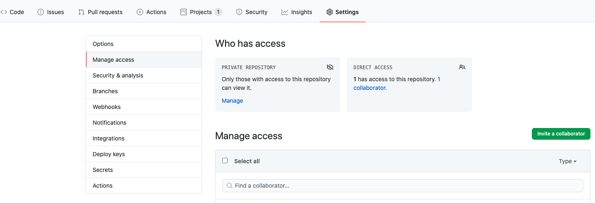
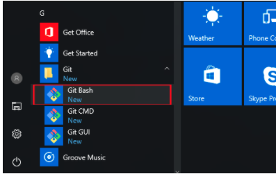
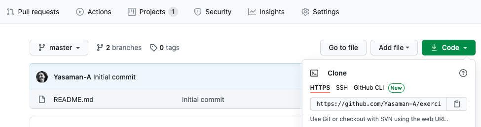
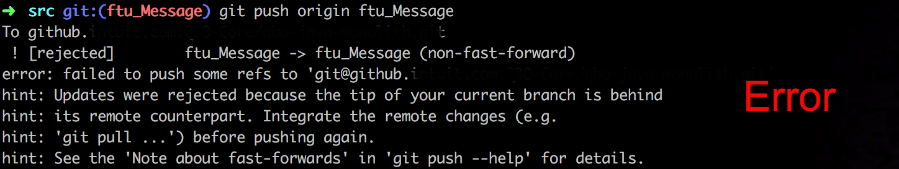
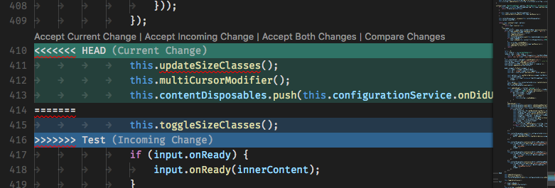

In this activity, you will practice your Git knowledge related to making changes in your local and remote repositories. You will follow a set of steps and will take screenshots of your work as a proof of completing the tasks. You will include all your screenshots in a word file and submit your file. You should work in pairs (2 people) on this activity.
Estimated time: 1 hour
Accounts and installations
- We will use Github in this activity. If you do not have a Github account, please create an account at https://github.com/ before you start.
- Then, make sure that Git is installed on your computer. You can check the version of your git with git --version. If it is not installed, please install it from https://git-scm.com/downloads
Alice and Bob are planning to manage their Web development project using a popular version control system called Git. They want to start working in a simple way, with a remote repository that they both can commit and push changes to. Here is what Alice and Bob will do:
- Alice will create a private repository in GitHub, called "HelloGit". When creating the repository, Alice will create a README file for the project. Alice will give Bob a contributor access to the repository.

@Alice: when creating a repository, there is an option that you can select to add a README file to the repository.
@Bob: please login to your email connected to your GitHub account and accept the invitation. Then, login to your GitHub and make sure that you have access to the repository.
- Alice and Bob will both open the Git Bash tool and will go to a directory on their computer where they want to store their repository files.

- Alice and Bob will clone the remote project and create their own local working directory. You can find the url of your repository online in your GitHub account.

git clone https://github.com/Your-UserName/Repository-Name.git
- Alice and Bob, if you have not set your account information on the computer you are working on, the command line will prompt you to enter your username and password. You can list the current git configuration on your computer using
git config --global --list
- You can set your account information on the computer. This is very useful when you are working on your personal computer. When working on any public computers such as lab machines, I would ignore this step and instead each time the system asks for a username and password, I will enter them everytime. You can set your username and email address in this way:
git config --global user.name ‘Alice-Liddle'
git config --global user.email ‘alice@wonderland.ca'
Note that the above commands will set your username and password in your global settings. To view or change the configurations local to your repository, you can use --local in your commands.
Updating local repository
- Bob will create an index.html file in his local directory, with the following content:
<html><head><meta name="author" content="Cheshire Cat"></head><body> </body> </html>
- Bob will use git add command to add the file to the staging area.
git add index.html
@Bob: in every step, you can use git status to check the status of your project.
Bob can continue working on the index file or other files and add them all to the staging area. When ready, Bob can commit his changes to his local repository using
git commit -m ‘descriptive message'
Each commit will take a snapshot of the project and store it in the local repository. Bon can make one or more commits before he decides to push his changes to the remote repository.
Updating the remote repository
- The changes that Bob has made are still on his own local repository. To update the remote repository on GitHub he has to do one more step, after which other members of the team can see the changes in the GitHub repository. Bob has to push his changes to the remote repository.
git push origin master
master is the name of your default branch, and origin is the default name for your remote repository. In this case, you are pushing your changes to the master branch in your remote repository.
Alice, it is now your turn!
Updating the local and remote repository
- Alice will follow similar steps (9-10) and will create and push product.html file with a content of her choice to the remote repository.
- Now, Alice and Bob both should see index.html and product.html in the remote repository, but their local repositories do not have all the files!
Get All Files
- Now, Alice and Bob, will pull the remote repository to sync their local repository with the remote repository:
git pull origin master.
You know the meaning of origin and master at this point! If you cannot remember, go to step 10.
Alice and Bon probably did not experience any file conflict when pushing their changes to the repository, because they were working on different files. But what happens if they were working on the same file?
When you push your changes, git will try to merge changes done by different people, automatically. However, some changes cannot be merged automatically, and they require developers attention. In such cases, you may see a conflict error message when pushing your changes. The error may look like this:

To solve the issue, before completing your push, you have to pull the changes from the remote repository to your local repository and merge them manually. You can open the file that has conflict in it using an editor and see the two versions that need to be merged. It may look like this:

After deciding what should be the final code in the conflict section, you should get rid of the head, separator, and end markers (<<<<< ======= >>>>>>).

- You finished your task. Keep practicing!